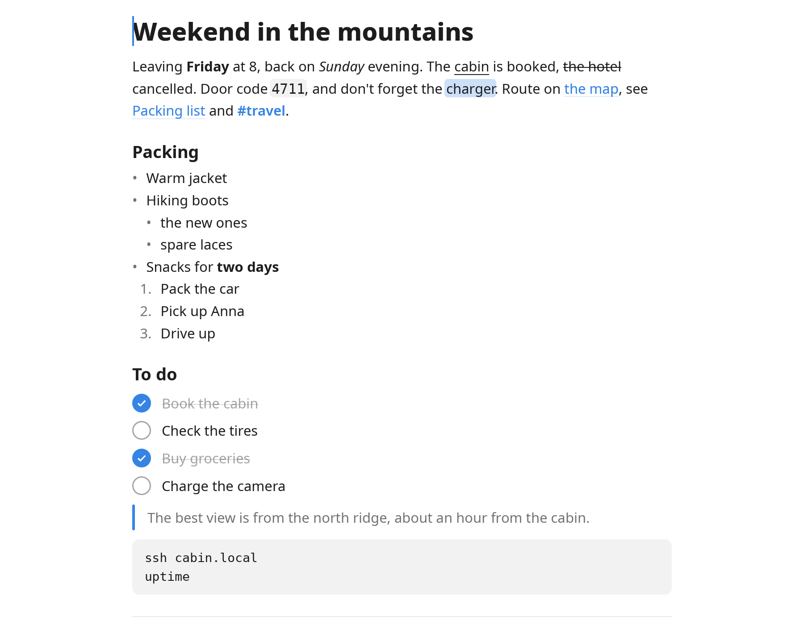

gpui-markdown-editor
WYSIWYG Markdown editing for GPUI, Zed's Rust UI framework
Lossless round-trip
Input rules, tables, checklists
1.5 ms per keystroke at 10k blocks
github.com/taulit/gpui-markdown-editor
